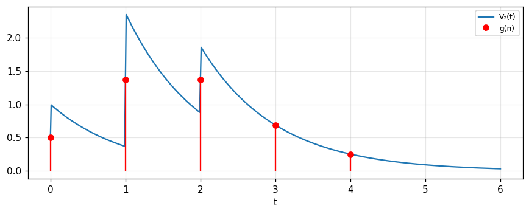

Waveforms, spectra, filters and linearity
The spectrum of an electrical waveform, the transfer function and impulse/step responses of a filter, digital filtering, the theorems read in circuit language, and why linearity plus time invariance leads to convolution.
Lecture (slides) Hands-on with the Jupyter Notebook Self-check quiz
Lecture (slides)
Waveforms, spectra, filters and linearity
- Write the spectrum S(f) of a real waveform, state notation systems 1, 2, 3 and the restrictions of Table 9.1.
- Characterise a filter by T(f), impulse response I(t) or step response A(t) and convert between them.
- Filter a digital signal with a convolution sum with h(n) and know why samples of the continuous response equal g(n).
- Read the theorems (similarity, shift, modulation, its converse) in the language of waveforms, spectra and filters.
- Prove that linearity plus time invariance is equivalent to harmonic response and convolution; distinguish linearity from invariance, and treat stability.
Use the buttons, the dots or the ← → keys to move between slides.
Electrical waveforms and their spectra
- Definition of the spectrum of a waveform
- Notation systems and restrictions
- The Hartley transform
The electrical waveform
An electrical waveform V(t) is a single-valued real function of time subject only to representing physically possible time dependence. Yet it is established usage to speak as though steps, impulses and absolutely monochromatic signals were waveforms, even though discontinuous, infinite or eternal currents or voltages cannot be generated. When we state the behaviour of circuits in the presence of steps or impulses we imply a more rigorous statement in which that behaviour is the limiting form under a sequence of stimuli approaching a step or infinite pulse; the same applies to alternating or direct current (Bracewell, p. 198).
The spectrum of a waveform
The spectrum S(f) of V(t) is defined as its Fourier transform (or transform in the limit as necessary), and V is recovered by the inverse transform (p. 198):
This is system 1 of chapter 2. With V=e^{-t}H(t), S=1/(1+i2\pi f); at f=0.3 its magnitude is 0.4686.
A real waveform: a Hermitian spectrum
Since V(t) is real, S(f) is subject to a restriction: the real part must always be even and the imaginary part odd, i.e. S is Hermitian (chapter 2; p. 199). Measured with a random real sequence: |S(-f)-S^*(f)| deviates by at most 3.6e-15, i.e. every value satisfies S(-f)=S^*(f).
Table 9.1: corresponding restrictions
| Restriction | On the waveform | On the spectrum |
|---|---|---|
| Real | \text{Im}\,V=0 | \text{Re}\,S even, \text{Im}\,S odd |
| Switches on (causal) | V(t)=0,\ t<0 | \text{Im}\,S is the Hilbert transform of \text{Re}\,S |
| Nonnegative | V(t)\ge0 | Complicated |
| Finite energy | \int V^2dt=W | \int|S|^2df=W |
| Finite duration | V(t)=0,\ |t|>T | Fully determined by samples of S |
| Band-limited | Fully determined by samples of V | S(f)=0,\ |f|>f_0 |
(Bracewell, p. 199).
Causality and the Hilbert transform
For a causal waveform the real and imaginary parts of the spectrum are not independent. Measured with V=e^{-t}H(t): \text{Re}\,S=1/(1+4\pi^2f^2), \text{Im}\,S=-2\pi f/(1+4\pi^2f^2); the Hilbert transform (computed by FFT) of \text{Re}\,S deviates from -\text{Im}\,S by at most 1.6e-06 (sign per the e^{-i2\pi ft} convention: \text{Im}\,S=-\mathcal H[\text{Re}\,S]).
Systems 2 and 3
In system 2, substituting \omega=2\pi f: S(\omega)=\int Ve^{-i\omega t}dt, V=\dfrac1{2\pi}\int S(\omega)e^{i\omega t}d\omega; the unsymmetrical coefficient 1/2\pi may be written in front of either integral, and users remember its place by noting that if d\omega/2\pi were replaced by df the formulas would be symmetrical. System 3 is symmetric: S=\dfrac{1}{\sqrt{2\pi}}\int Ve^{-i\omega t}dt (p. 199). Measured with the Gaussian e^{-\pi t^2}: system 1 at f=0.3 is 0.7537, system 2 at \omega=2\pi(0.3) is also 0.7537, system 3 is 0.3007 (divided by \sqrt{2\pi}).
A train of impulses: the bridge to DSP
The waveform V(t) may be a train of impulses of varying amplitude. In particular the impulses may be regularly spaced, occurring at times t=t_i with strengths a_i, where i and t_i are integers. Normal continuous-time theory then covers signals representable by the sequence of coefficients \{a_i\} and directly generates the subject matter of digital signal processing (DSP) (pp. 199 to 200).
A pair with total symmetry: the Hartley transform
Hartley (1942) proposed a pair of formulas with total symmetry: H(\omega)=\dfrac{1}{2\pi}\int V(t)(\cos\omega t+\sin\omega t)dt with the inverse having the same kernel. Since \cos\omega t+\sin\omega t is a Fourier kernel, the Fourier theorems have counterparts (chapter 12), and the fast Hartley algorithm has been explored in hundreds of papers since 1983 (p. 200). For a real waveform, H=\text{Re}\,S-\text{Im}\,S. Measured with V=e^{-t}H(t) at f=0.3: the direct integral and \text{Re}\,S-\text{Im}\,S both give 0.6336.
Self-check, part 1
- What restriction on the spectrum follows from V(t) being real?
- What relation between the real and imaginary parts of S does a causal waveform give?
- By what factor does system 3 differ from system 1?
Hints: S(-f)=S^*(f); they are related by the Hilbert transform; a factor 1/\sqrt{2\pi} and the variable \omega.
Filters: transfer function, impulse response and step response
- A filter and its transfer factor
- Two ways to compute the output
- The step response
What is a filter
We use the term "filter" for a physical system having an input and an output; equivalent terms are transducer, fourpole, four-terminal network and two-port element. Although electrical terminology is used, the considerations usually apply to mechanical and acoustical transducers and to equivalent devices in other fields where vibrations are transmitted. Even within electricity filters may range from clusters of wire coils and capacitors to intricate geometrical structures in waveguide (Bracewell, p. 200).
The transfer factor T(f)
When a waveform A\cos2\pi ft is fed into a linear time-invariant electrical filter, the output is also harmonic (to be proved later) but generally with a different amplitude and phase: B\cos(2\pi ft-\phi). The filter is completely specified by a frequency-dependent complex quantity T(f)=\dfrac{B}{A}e^{-i\phi} (pp. 200, 209), called the transfer factor, transfer function, system function or frequency response. Measured with the RC circuit I=e^{-t}H(t), f=0.3: |T| = 0.4686 and phase -\phi = -62.1 degrees by the formula 1/(1+i2\pi f); a time-domain simulation (the steady-state output for \cos2\pi ft) gives amplitude 0.4689 and phase lag -62 degrees.
Way 1: analyse into a spectrum, multiply, synthesise
To compute the output V_2(t) for an input V_1(t): analyse V_1 into its spectrum, multiply each component by the corresponding transfer factor to obtain the spectrum of V_2, then synthesise: S_2(f)=T(f)S_1(f) and (pp. 200 to 201):
Way 2: convolve with the impulse response
Since multiplication of transforms corresponds to convolution, V_2(t) may be derived directly from V_1(t) by smoothing with a function characteristic of the filter, V_2=I*V_1 with I(t) the transform of T(f) (p. 201). I(t) is the output when S_1=1, i.e. when V_1=\delta(t): the "impulse response" of the filter in communications. For many purposes it is as useful as the frequency characteristic and may be much easier to obtain experimentally. Measured: a unit rectangular pulse (width 1) through the RC circuit gives V_2(1.5) = 0.3834 by numerical convolution, by e^{-0.5}-e^{-1.5} and by the IFFT of T\cdot S_1.
The summary diagram
Combining all the quantities into one diagram with time functions on the left and transforms on the right: V_1(t)\leftrightarrow S_1(f); convolution with I(t) corresponds to multiplication by T(f); the result is V_2(t)\leftrightarrow S_2(f) (p. 201). Equation (2) breaks V_1 up into a sequence of impulses and expresses V_2 as the sum of the responses to each component impulse.
A third way: the step response A(t)
The step response A(t) is the output when a constant signal is switched on, V_1=H(t). Regarding V_1 as a sequence of steps V_1'(\tau)H(t-\tau) we have V_2=A*V_1' (equation 3). Transforming and comparing with (1): S_2=\mathcal A(f)\,i2\pi fS_1 (equation 4), so T(f)=i2\pi f\,\mathcal A(f) with \mathcal A the transform of A, and I(t)=A'(t) (pp. 201 to 202). Measured with the RC circuit, A=1-e^{-t}: A'=e^{-t} equals I with deviation 1.7e-07; and V_2=A'*V_1 matches I*V_1 in the rectangular-pulse example.
Table: three ways to specify a filter
| Analyse input into | Specify filter by | Fourier transform |
|---|---|---|
| Sine and cosine waves | Transmission characteristic T(f) | I(t) |
| Impulses | Impulse response I(t) | T(f) |
| Steps | Step response A(t) | T(f)/i2\pi f |
(Bracewell, p. 202, Fig. 9.1). So the Fourier integral arises in filter theory in three forms, and so does the convolution: V_2=I*V_1=A'*V_1.
Derivatives, integrals and fractional order
Rewriting (4) with a different choice of factors gives V_2=A'*V_1, or formulas involving higher derivatives and integrals, including fractional order (p. 202). Fig. 9.1 summarises: differentiation corresponds to multiplication by i2\pi f, integration to division by i2\pi f. For the ramp response R(t): V_2=R*V_1'' (problem 1, p. 211).
Self-check, part 2
- What is the impulse response I(t) of the RC circuit T=1/(1+i2\pi f)?
- Knowing the step response A, how do we obtain I?
- Why is S_2=TS_1 equivalent to V_2=I*V_1?
Hints: e^{-t}H(t); I=A'; multiplication of transforms corresponds to convolution.
Generality and digital filtering
- Generality
- Digital filtering and the convolution sum
- A numerical example and problem 30
Generality of linear filter theory
The symbol V has been used for both input and output, but the discussion is not limited to electrical quantities: mechanical, acoustical and optical interpretations are included, and the input may be a voltage and the response a current, or vice versa. For a current response to voltage excitation T(f) has the established name transfer admittance; transfer impedance for voltage response to applied current. Velocity/force, flow/pressure, electromagnetic field ratios and related ratios wherever linearity prevails are covered, provided time invariance also applies (Bracewell, p. 203).
Digital data are included too
Digital signals such as \{1\ 2.7\ 7.4\ 20.1\ \ldots\} are equivalent in information content to impulsive functions of continuous time, here \delta(t)+2.7\delta(t-1)+7.4\delta(t-2)+20.1\delta(t-3)+\ldots. So discrete-time signals are included in the theory. For numerical work, however, the practical operations differ: they reduce to the convolution sums of chapter 3, analogous to computing an integral by summing discrete values, a procedure different from evaluating integrals by analysis (p. 203).
Circuit diagram, flow diagram and model
The circuit diagram, by origin a mechanical drawing showing the layout of coiled wires, condenser plates and posts, no longer stands for a physical device at all; it stands for a set of differential equations. We abstract, then handle the mathematical model without further reference to the physical world. Signal theory is on a further level of abstraction where the differential equations are tucked inside black boxes and replaced by overall operators, and the flow diagram, though descended from the circuit diagram, suppresses circuit concepts in favour of overall operations such as matrix operations, and is thus twice removed from manufacturing reality (pp. 203 to 204).
Digital filtering
Discrete-time signals, where t takes integer values, can arise as regular samples of a continuous-time signal V(t); the sequence f(n) is an approximate representation of the underlying "true" signal, and measured values such as f(n) are the basis of our knowledge of V(t). The sampling device contains a clock that connects V(t) to a capacitance for a short charging time; a sample is of necessity a weighted average over a finite time. Other discrete signals, such as daily counts of landings at an airport or daily rainfall, are not samples of any continuous function; they exist in their own right (Bracewell, p. 204).
The discrete convolution sum
Low-pass filtering reduces unwanted random noise or rapid systematic fluctuations, high-pass filtering reduces unwanted drifts, and precision filtering meets legal bandwidth requirements on telephone lines and wireless transmission. The filtering is a convolution with a desired discrete impulse response h(n), often obtained as the Fourier transform of an imposed frequency response: g(n)=h(n)*f(n), compared with the continuous convolution integral V_2=I*V_1 (p. 204). A filter h(n) with a finite number of terms is a finite impulse response (FIR) filter. Measured with the 3-point moving average h=\{\tfrac13,\tfrac13,\tfrac13\} and input \cos2\pi(0.1)n: the steady-state output amplitude 0.8727 equals |H(0.1)| = 0.8727.
Continuous versus discrete: the value of h(0)
If a discrete signal f(n) had to be filtered by a continuous impulse response such as e^{-t}H(t), one could evaluate V_2(t)=I(t)*\sum f(n)\delta(t-n), but the output would no longer be a discrete-time signal. The normal procedure is to convert I(t) into h(n) given by h(0)=0.5, h(1)=e^{-1}, h(2)=e^{-2},\ldots: the initial value h(0) is chosen as the mean of I(0^-) and I(0^+) (pp. 204 to 205). Then the values of g(n) are the same as the samples of V_2(t) at integer t (Fig. 9.2).
The book's example: \{1\ 2\ 1\}
With h(n)=\{0.5,\ e^{-1},\ e^{-2},\ldots\} and f(n)=\{1\ 2\ 1\}: g(n)=\{0.5,\ 1.37,\ 1.37,\ 0.69,\ 0.25,\ldots\} (p. 205). Measured: g(1) = 1.368, g(2) = 1.371, g(3) = 0.688, g(4) = 0.253, by both the numerical convolution sum and by evaluating the continuous V_2(t) at integer points (with H(0)=\tfrac12).

Problem 30: the signal \{1\ 1.6\ 2\ 0.6\} through an RC filter
The signal \{1\ 1.6\ 2\ 0.6\} with spacing 1 microsecond is applied to an RC filter with RC=1 microsecond; represent it by the impulse train \delta(t-1)+1.6\delta(t-2)+2\delta(t-3)+0.6\delta(t-4) and graph the response as the sum of four exponentials (p. 218). Measured: V_2 at t=3 is 1.7239, at t=4 is 1.3021, at t=6 is 0.2168; the coefficients of the algebraic expressions match the convolution sum \{0.5, e^{-1}, e^{-2},\ldots\}*\{1, 1.6, 2, 0.6\}.
Self-check, part 3
- Why is h(0)=\tfrac12 rather than 1 when sampling e^{-t}H(t)?
- How does digital filtering differ from evaluating the continuous convolution integral in computation?
- What is an FIR filter?
Hints: the mean of the two sides of the jump; a finite convolution sum replaces the integral; an impulse response with a finite number of terms.
The theorems read in circuit language
- Similarity and addition
- Shift and modulation
- The converse of modulation
Table 9.2: theorems for waveforms and spectra
All theorems of chapter 6 are interpretable for waveforms, spectra and filters; Table 9.2 gathers them in this chapter's symbols: similarity V(at)\supset|a|^{-1}S(f/a), addition, shift V(t-T)\supset e^{-i2\pi fT}S, modulation, convolution I*V_1\supset TS_1, autocorrelation \supset|S|^2, differentiation V'\supset i2\pi fS, its inverse tV\supset-S'/i2\pi, t^2V\supset-S''/4\pi^2, finite difference \Delta_TV\supset2i\sin\pi TfS, second difference -4\sin^2\pi TfS, running means \supset\text{sinc}\,Tf\,S, together with Rayleigh, energy, definite integral, centre of gravity, moments, equivalent width and the inequalities (pp. 205 to 206). The first four are discussed on the following slides.
Similarity: compressing the time scale raises every frequency
The reciprocal relationship of period and frequency is evident in this theorem: compression of the time scale by a factor compresses the periods of all harmonic components equally and therefore raises the frequency of every component by the same factor. Since V(0) is unaffected by time-scale changes, the area under the spectrum must, by the definite-integral theorem, remain constant, hence the compensating factor |a|^{-1}, which weakens the spectrum if it spreads to higher frequencies (pp. 206 to 207). Problem 2: playing back a film sound track at twice speed doubles the frequency. Measured with the Gaussian, a=2: the peak of the spectrum falls to 0.5 and the area under the spectrum stays 1.
Addition: merely the linearity of the transform
Even translated into the language of electrical waveforms and spectra, the addition theorem is simply an expression of the linearity of the Fourier transformation. It has nothing to do with the linearity of the systems in which the waveforms are found, and must of course be true even of waveforms in nonlinear circuits. The linear property of the transformation makes it suitable for dealing with linear problems (p. 207).
Shift: a delay affects each component differently
When a waveform is delayed by T its harmonic components are affected differently: a component whose frequency equals or is an integral multiple of T^{-1} is not affected at all; components with periods much greater than T are not affected much; those with periods short compared with T may be seriously altered in phase. The component of period T_1=f_1^{-1} is unchanged in amplitude but delayed in phase by 2\pi T/T_1, so S(f_1) becomes \exp(-i2\pi f_1T)S(f_1) (p. 207). Measured with T=0.5: the phase factor at f=2 (a multiple of 1/T) is 1 (unchanged); at f=0.1 it is -18 degrees; at f=1.3 it is 126 degrees.
Modulation: carrier and sidebands
In the ordinary method of imposing an audio tone of angular frequency \omega on a carrier of angular frequency \Omega, the modulated waveform is (1+M\cos\omega t)\cos\Omega t, with M the depth of modulation. It differs from the unmodulated carrier \cos\Omega t by the addition of M\cos\omega t\cos\Omega t, a quantity of the form to which the modulation theorem applies (p. 207). The theorem: the spectrum of V(t)\cos\omega t is derivable by splitting S(f) into two halves, one slipped to the right by \omega/2\pi, the other an equal distance to the left. Adding the spectrum of the unmodulated carrier (addition theorem) reproduces the familiar sidebands of simple modulation theory (Fig. 9.3, p. 208). Measured with M=0.5, 50 Hz carrier and 5 Hz tone: carrier 0.5 at ±50, sidebands 0.125 at ±45 and ±55, i.e. M/4.
The converse of the modulation theorem
Two identical signals are sent out in succession; the spectrum of the composite signal is obtained from the spectrum of one alone by multiplication by a cosine function of frequency. With the time origin midway between the separate origins (p. 208): V(t+T)+V(t-T)\supset2\cos2\pi Tf\,S(f); or V(t)+V(t-2T)\supset2e^{-i2\pi Tf}\cos2\pi Tf\,S(f) (Fig. 9.4). Both follow directly from the shift theorem. Measured with the Gaussian, T=1, f=0.3: |2\cos(2\pi Tf)S| = 0.4658 by numerical integration; the second form has phase 72 degrees.
Problem 24: two delayed channels give a cosine |T|
A signal is divided into two channels, one with delay T_1 and the other a longer delay T_2, then added: T(f)=e^{-i2\pi fT_1}+e^{-i2\pi fT_2}, so |T|=2|\cos\pi f(T_2-T_1)| is a cosine function of frequency (problem 24, p. 216). A chain of three such systems makes a rectangular impulse response, relying on the cosine product \prod\cos(\pi x/2^k)=\text{sinc}\,x. Measured with T_1=0.3, T_2=1.1, f=0.4: |T| = 1.0717, and it deviates from 2|\cos\pi f\Delta| by only 2.2e-16. With four cosine factors the error against \text{sinc}\,x reaches 1 percent of the peak at x = 4.47; the corrected formula \text{sinc}\,x=\prod_{k=1}^{N}\cos(\pi x/2^k)\,\text{sinc}(x/2^N) holds with error 4.4e-16.
Problem 29: resolving two Gaussian spectral lines
A spectrograph responds to a spectral line as \exp(-\pi x^2/W^2); two equal lines a distance L apart give \exp[-\pi(x+\tfrac12L)^2/W^2]+\exp[-\pi(x-\tfrac12L)^2/W^2]. For L\gg W two peaks with a minimum between are recorded; bring the lines closer and there is a value L_{\max} where the central minimum rises to the level of the peaks, at which the central curvature vanishes (p. 218): L_{\max}=W\sqrt{2/\pi} = 0.7979W. Measured on a grid: at L=0.98L_{\max} there is one maximum; at L=1.02L_{\max} there are two. For L=0.8L_{\max} only one peak remains, but fitting a model can still infer two lines and their spacing if the line shape is known.
Self-check, part 4
- Why is there a factor |a|^{-1} in the similarity theorem?
- Which components are unchanged when the waveform is delayed by T?
- How many lines does an AM wave have at positive frequency and what are their relative strengths?
Hints: to keep the area under the spectrum equal to V(0); frequencies that are multiples of 1/T; three lines: carrier \tfrac12 and two sidebands M/4.
Linearity, time invariance, periodicity and stability
- Linearity and time invariance: definitions
- Proof of harmonic response and convolution
- Periodicity, stability and a pulse-forming line
Definition of linearity
Suppose V_2(t) is the response of a filter to a stimulus V_1(t) and W_2(t) the response to W_1(t). The filter is said to be linear if the response to V_1+W_1 is V_2+W_2, irrespective of the choice of V_1, W_1. Sometimes a condition is added that aV_1 shall have response aV_2 for all a, but it can be deduced from the superposition property, proving it first for integer a, then for a ratio of integers (p. 209). For the mathematical considerations that arise when a voltage may be irrational, see Newcomb (1963) (footnote, p. 209).
Time invariance
Time invariance means the response to V_1(t-T) is V_2(t-T) for all T and V_1(t) (p. 209). As a consequence of linearity and time invariance, a stimulus A\cos2\pi ft with any f produces a response B\cos(2\pi ft-\phi) of the same form, possibly delayed in phase by \phi and different in amplitude by B/A; these quantities are properties of the filter and are compactly expressed in the transfer factor T(f)=(B/A)e^{-i\phi}. This property is sometimes loosely called "harmonic response to harmonic input".
Proof: harmonic response to harmonic input
Let the unit stimulus be the real part of the complex function \hat V_1(t)=e^{i2\pi ft}. Suppose the response is K(f,t)e^{i2\pi ft}, a general function of f and t. For a delayed stimulus e^{i2\pi f(t-T)}, by invariance the response is K(f,t-T)e^{i2\pi f(t-T)}; but the delayed stimulus is the original times the complex constant e^{-i2\pi fT}, so by linearity the response is the original response times the same constant. Hence K(f,t-T)e^{i2\pi f(t-T)}=e^{-i2\pi fT}K(f,t)e^{i2\pi ft}, i.e. K(f,t-T)=K(f,t): K is independent of t and is just T(f) (pp. 209 to 210). Measured: A\cos2\pi ft through a linear time-invariant FIR filter gives output with energy outside that same frequency of only 1e-32 (fraction).
Proof: linearity plus invariance ⇒ convolution
Since the filter is linear the response is the most general linear functional of the stimulus: V_2(t)=\int J(t,t')V_1(t')dt'. Invariance: V_2(t-T)=\int J(t,t')V_1(t'-T)dt', i.e. V_2(t)=\int J(t+T,t'+T)V_1(t')dt'. Hence J(t,t')=J(t+T,t'+T) for all T, so J is a function of t-t' only: J(t,t')=I(t-t') and V_2=\int I(t-t')V_1(t')dt', a convolution (pp. 210 to 211). Conversely a convolution gives harmonic output for harmonic input, so the two conditions are equivalent.
When violated: nonlinear and time-varying systems
A nonlinear system breaks the harmonic response: a squarer y=x^2 with input \cos2\pi ft gives \tfrac12+\tfrac12\cos4\pi ft, a d.c. component and one at 2f (amplitude 0.5 each). A time-varying system breaks the same property: multiplying by \cos2\pi f_2t (a mask, or a non-invariant system) turns an input of frequency f=5 into two frequencies 4 and 6 when f_2=1. The book's problems 12 and 13: a capacitor with a squeezed dielectric has its capacitance varying at twice the frequency, so the current is not sinusoidal; and a mask multiplying an image is linear but space-variant, so it can convert high spatial frequencies to low (p. 213).
Periodicity
A nonconstant function f(x) defined for all x is periodic with period T if there is a positive constant T with f(x+T)=f(x) for all x; the function need not be continuous. It can have more than one period: \cos x has period 2\pi but also 4\pi, 6\pi; the smallest is the fundamental period. The sum of two periodic functions is not necessarily periodic (\cos x+\cos\pi x) but may be (\cos x+\cos99x). The presence of a periodic component does not guarantee periodicity, and a waveform may be periodic without any trace of a component at the corresponding frequency in the Fourier analysis (p. 211). Problem 27: y=9\cos5x+11\cos4x is periodic with period 2\pi (deviation 4e-13), yet the fundamental component at 1/2\pi has amplitude 0: the elusive period.
Stability
In mechanics a system is stable if a small perturbation produces forces returning it to its original configuration. A different idea is also used: a linear system is stable if |V_2(t)|<kM for any |V_1(t)|<M; in other words if the input stays bounded the output also does. Another form: the system is stable if the absolute integral of the impulse response \int|I(t)|dt is finite (problem 18, p. 214). Measured: the RC circuit has \int|I|dt = 1; the ideal integrator I=H(t) has an integral up to t=100 of 100 and grows without bound (unstable: a constant input 1 gives output t); I=e^{-t}\cos2\pi t\,H(t) has \int|I| = 0.6392, exactly the largest gain, reached with input \text{sgn}\,I(-t).
Problems 16, 17, 19: associativity and boundedness
Problem 16: two networks in tandem with I_1=H(t), I_2=\delta(t)-\delta(t-1); for input e^{t} the convolution e^t*H(t) does not converge, so associativity of convolution seems to break down even though the full three-factor convolution converges; the problem reminds us that associativity of convolution needs the intermediate integrals to exist (p. 214). Problem 19: a short-circuited loss-free transmission line has \int|I|dt=\infty (its impulse response is an infinite impulse train) so it looks unstable, yet for one particular bounded input only a bounded output is seen; the book asks what the truth is. We only record that trying a single bounded input is not enough to conclude stability (p. 215).
Case: a radar pulse generator
The book's problem: to deliver a megawatt of radio-frequency power to an antenna in a pulse of \Delta=0.1\ \mus duration, a generator must be excited at its input by 15,000 volts. A conductor of a transmission line is charged for about a millisecond to 30 kV, its characteristic impedance Z_0 made equal to the input resistance of the generator; at t=0 a switch connects the charged line to the generator, applying 15 kV to the input. Charge pours out at a constant rate for 0.1 microsecond until expended (p. 212). We compute: R=V^2/P = 225 ohms; the pulse duration is 2\ell/v so \ell=v\tau/2 = 15 metres if v=c (real cable is slower so shorter); the pulse energy P\tau = 0.1 J equals \tfrac12CV^2 = 0.1 J with C=\ell/(vZ_0).
Self-check, part 5
- Why does J(t,t') depend only on t-t'?
- Give an example of a system that is linear but not time-invariant.
- Why is 9\cos5x+11\cos4x periodic yet missing the fundamental component?
Hints: time invariance; multiplication by a varying function such as \cos2\pi f_2t; the fundamental 1/2\pi is the common divisor of the two frequencies but there is no component there.
Takeaways
- The spectrum of a real waveform is Hermitian; for a causal waveform the imaginary part is the Hilbert transform of the real part.
- A filter is specified by T(f), I(t) or A(t), with S_2=TS_1, V_2=I*V_1=A'*V_1.
- Digital filtering is a convolution sum with h(n); choose h(0) as the two-sided mean so samples match the continuous response.
- Linearity plus time invariance is equivalent to harmonic response and convolution; nonlinearity or time variation breaks it.
- Modulation gives two sidebands M/4, its converse multiplies the spectrum by a cosine, and stability means \int|I|dt is finite.
📜 Theory & historical background
Hartley (1942) proposed the pair of formulas with total symmetry now called the Hartley transform; the fast Hartley algorithm has been explored in hundreds of papers since 1983 (Bracewell, p. 200). Newcomb (1963) treats impulse-response theorems through generalized functions; Oppenheim and Schafer (1989) and Schwartz (1990) are references for digital signal processing and for information transmission, modulation and noise (p. 211).
🔎 Real-world case study
A three-point digital filter. The moving average h=\{\tfrac13,\tfrac13,\tfrac13\} passes frequency 0.1 with amplitude 0.8727 (simulation gives 0.8727): a slow signal goes through almost intact. An RC circuit of the same low-pass kind gives 0.4686 at 0.3 with phase lag -62.1 degrees. In the chapter's view both are just a T(f) and an I(t); feed in an amplitude-modulated wave and see the carrier and the two sidebands (M/4 = 0.125) multiplied by different values of T, and be sure the output contains only frequencies already in the input since the system is linear and invariant (energy outside those frequencies 1e-32). Replace it by a squarer and new frequencies appear (0.5 at 2f); multiply by a varying function and frequencies are shifted (4 and 6).
🧮 Formula sheet for this module
🧪 Hands-on with the Jupyter Notebook
- Open the notebook and run the setup cell.
- Task 1: measure T(f) of the RC circuit by feeding cosines and compare with 1/(1+i2\pi f).
- Task 2: use the step response to compute the output for a trapezoidal input and compare with convolution with I.
- Task 3: design a four-point FIR filter to null frequency 0.25 and check with a test cosine.
- Task 4: try a clipping system and show the new frequencies that appear.
- Task 5: do problem 29 with another W and confirm L_{\max}=W\sqrt{2/\pi}.
Open in Google Colab Download notebook (.ipynb)
The notebook generates its own data in code, so no external files are needed. Every number on this page is printed by the notebook and cross-checked with two independent methods.
⚠️ Common misreadings
The addition theorem is only about the linearity of the transform; it is true even for waveforms in nonlinear circuits (p. 207). A nonlinear squarer still has additive spectra, but its output has a new frequency (0.5 at 2f).
Problems 14 and 15: proportionality to the input is not enough; linearity requires superposition for every pair of inputs (pp. 213 to 214).
9\cos5x+11\cos4x is periodic with period 2\pi (deviation 4e-13) although the component at 1/2\pi has amplitude 0 (p. 211, problem 27).
For the samples of V_2(t) to match g(n), take h(0)=0.5, the two-sided mean of the jump: g(1) = 1.368 in the example, correct by both calculations (p. 205).
✅ Self-check quiz
Click an answer to grade it immediately and read the explanation. Results are not saved.
References
- R. N. Bracewell, The Fourier Transform and Its Applications, 3rd ed., McGraw-Hill, 2000, chapter 9 (pp. 198 to 218).
- Works cited by chapter 9: Hartley (1942), Newcomb (1963), Olejniczak and Heydt (1994), Oppenheim and Schafer (1989), Schwartz (1990).